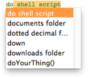

|
Text Completion |
|
Text completion means that you type the start of an AppleScript term and the rest of the term is typed for you.
To summon text completion:
- Press Esc. A list of possible completions appears.

This is essentially the same as the Complete or auto-suggestion functionality that appears generally in Cocoa applications such as TextEdit, Pages, and so on. Script Debugger creates a list of possible completions, based on:
-
Scripting addition terminology
-
AppleScript terminology
-
The terminology of the application targeted by the current tell context
-
Identifiers in the script itself (such as handler names)
To accept a completion:
-
Navigate the list with arrow keys to select the completion, and press Return.
-
Or, double-click the desired completion.
To cancel completion:
- Press Esc.